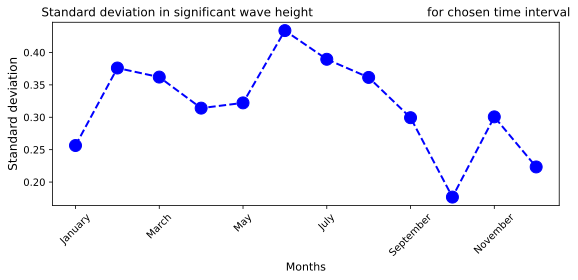
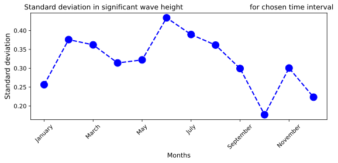

Satellite tile analysis¶
In this first notebook, we illustrate the use of RADWave to extract wave conditions based on altimeter data for a specific geographical region.
We will be querying data already downloaded from the obtained from Australian Ocean Data Network portal AODN.
We recomend to look at RADWave documentation and the embeded video that explain how to select both a spatial bounding box and a temporal extent from the portal and how to export the file containing the
List of URLs. ThisTXTfile contains a list ofNETCDFfiles for each available satellites.
from IPython.display import IFrame
IFrame(src='https://bit.ly/2ROFoLY', width=900, height=600)
Loading RADWave library and initialisation¶
We first start by importing RADwave library into our working space.
import RADWave as rwave
%matplotlib inline
%config InlineBackend.figure_format = 'svg'
Once the list of NETCDF data file has been saved on disk, you will be able to load it by initialising RADWave main Python class called waveAnalysis.
For a detail overview of the options available in this class, you can have a look at the waveAnalysis API.
Here, we will use the following parameters:
altimeterURL(str): list of NetCDF URLs downloaded from the wave data portal containing the radar altimeter data [‘…/dataset/IMOSURLs.txt’]bbox(list): bounding box specifying the geographical extent of the uploaded dataset following the convention [lon min,lon max,lat min,lat max] [here we use a region located offshore sydney]stime(list): starting time of wave climate analysis following the convention [year, month, day] [we chose the 1st of January 1985]etime(list): ending time of wave climate analysis following the convention [year, month, day] [we chose the 31st of December 2018]
For this example, we don’t specify a list of particular satellites to use (satNames keyword) so all of them will be queried. In other words we will look at all the records from the 10 altimeters:
JASON-2 - JASON-3 - SARAL - SENTINEL-3A - CRYOSAT-2 - ENVISAT - GEOSAT - ERS-2 - GFO - TOPEX.
wa = rwave.waveAnalysis(altimeterURL='../pracenv/dataset/IMOSURLs.txt', bbox=[152.0,155.0,-36.0,-34.0],
stime=[1985,1,1], etime=[2018,12,31])
Processing altimeters data¶
After class initialisation querying the actual dataset is realised by calling the processAltimeterData function. The description of this function is available from the API.
The function can take some times to execute depending on the number of NETCDF files to load and the size of the dataset to query (here it should not take more than 30 s).
RADWave uses the uploaded file containing the list of URLs to query via
THREDDSthe remote data. This operation can take several minutes and when looking at a large region it is recommended to divide the analyse in smaller regions and download a series of URLs text file instead of the entire domain directly.
wa.processAltimeterData(max_qc=1, altimeter_pick='all', saveCSV = 'altimeterData.csv')
Processing Altimeter Dataset
+ name JASON-2 / number of tracks 6
+ name JASON-3 / number of tracks 4
+ name SARAL / number of tracks 6
---------------------------------------------------------------------------
KeyboardInterrupt Traceback (most recent call last)
<ipython-input-4-a77cf9e50a80> in <module>
----> 1 wa.processAltimeterData(max_qc=1, altimeter_pick='all', saveCSV = 'altimeterData.csv')
/usr/share/miniconda/envs/coast/lib/python3.6/site-packages/RADWave/altiwave.py in processAltimeterData(self, max_qc, altimeter_pick, saveCSV)
296 for k in range(len(picked_url)):
297
--> 298 ncs = NetCDFFile(picked_url[k])
299 if k == 0:
300 print(
src/netCDF4/_netCDF4.pyx in netCDF4._netCDF4.Dataset.__init__()
src/netCDF4/_netCDF4.pyx in netCDF4._netCDF4._get_vars()
src/netCDF4/_netCDF4.pyx in netCDF4._netCDF4.Variable.__init__()
/usr/share/miniconda/envs/coast/lib/python3.6/site-packages/netCDF4/utils.py in _find_dim(grp, dimname)
39 return [A[i] for i in sorted(range(len(A)), key=B.__getitem__)]
40
---> 41 def _find_dim(grp, dimname):
42 # find Dimension instance given group and name.
43 # look in current group, and parents.
KeyboardInterrupt:
In case where the processAltimeterData function has already been executed, one can load directly the processed data from the created CSV file in a more efficient way by running the readAltimeterData function as follow:
wa.readAltimeterData(saveCSV = 'altimeterData.csv')
Reading Processed Altimeter Dataset
Once the dataset has been queried, we can plot the altimeter data points on a map using the visualiseData function.
This function plots and saves in a figure the geographical coordinates of processed altimeter data.
wa.visualiseData(title="Altimeter data tracks", extent=[149.,158.,-38.,-32.],
addcity=['Sydney', 151.2093, -33.8688], markersize=40, zoom=8,
fsize=(8, 7), fsave=None)
/Users/getafix/anaconda3/envs/coast/lib/python3.6/site-packages/cartopy/mpl/gridliner.py:307: UserWarning: The .xlabels_top attribute is deprecated. Please use .top_labels to toggle visibility instead.
warnings.warn('The .xlabels_top attribute is deprecated. Please '
/Users/getafix/anaconda3/envs/coast/lib/python3.6/site-packages/cartopy/mpl/gridliner.py:331: UserWarning: The .ylabels_left attribute is deprecated. Please use .left_labels to toggle visibility instead.
warnings.warn('The .ylabels_left attribute is deprecated. Please '

Computing wave regime for specified location¶
To perform wave analysis and compute the wave parameters discussed in the documentation, we run the generateTimeSeries function.
This function computes time series of wave characteristics from available altimeter data namely the significant wave height and the wind speed.
It computes both instantaneous and monthly wave variables:
significant wave height (m) - wh & wh_rolling
wave period (s) - period & period_rolling
wave energy flux (kW/m) - power & power_rolling
wave average energy density (J/m2) - energy & energy_rolling
wave group velocity (m/s) - speed & speed_rolling
timeseries = wa.generateTimeSeries()
The class waveAnalysis stores a Pandas dataframe (called timeseries) of computed wave parameters that can be subsequently used to perform additional analysis.
To visualise this dataframe, one can do:
display(wa.timeseries)
| date | wh | wh_rolling | period | period_rolling | power | power_rolling | energy | energy_rolling | speed | speed_rolling | lat | lon | day | month | year | |
|---|---|---|---|---|---|---|---|---|---|---|---|---|---|---|---|---|
| 0 | 1985-04-13 08:22:39.835939 | 3.3380 | 3.338000 | 6.820216 | 6.820216 | 149.027418 | 149.027418 | 13999.974159 | 13999.974159 | 10.644835 | 10.644835 | -34.356148 | 152.339462 | 13 | 4 | 1985 |
| 1 | 1985-04-16 08:31:20.722658 | 3.2370 | 3.287500 | 7.593262 | 7.206739 | 156.030379 | 152.528898 | 13165.578585 | 13582.776372 | 11.851388 | 11.248112 | -34.494278 | 153.307892 | 16 | 4 | 1985 |
| 2 | 1985-04-16 08:31:30.031252 | 3.2520 | 3.275667 | 8.068064 | 7.493847 | 167.326903 | 157.461566 | 13287.878634 | 13484.477126 | 12.592447 | 11.696223 | -35.012566 | 153.013702 | 16 | 4 | 1985 |
| 3 | 1985-04-16 08:31:38.363283 | 3.1695 | 3.249125 | 8.171444 | 7.663247 | 160.981438 | 158.341534 | 12622.232117 | 13268.915873 | 12.753801 | 11.960618 | -35.475792 | 152.747742 | 16 | 4 | 1985 |
| 4 | 1985-04-22 08:48:59.253906 | 2.2560 | 3.050500 | 7.566001 | 7.643798 | 75.516172 | 141.776462 | 6394.885322 | 11894.109763 | 11.808839 | 11.930262 | -35.719948 | 154.700333 | 22 | 4 | 1985 |
| ... | ... | ... | ... | ... | ... | ... | ... | ... | ... | ... | ... | ... | ... | ... | ... | ... |
| 13594 | 2018-12-29 07:19:51.140629 | 2.9610 | 2.257066 | 6.217100 | 5.785322 | 106.895658 | 70.598167 | 11016.190276 | 7335.068674 | 9.703505 | 9.029597 | -34.503365 | 153.593140 | 29 | 12 | 2018 |
| 13595 | 2018-12-29 07:20:08.464846 | 2.8450 | 2.263982 | 6.698641 | 5.796067 | 106.327768 | 71.018515 | 10169.958412 | 7368.420317 | 10.455084 | 9.046367 | -35.520107 | 153.293304 | 29 | 12 | 2018 |
| 13596 | 2018-12-29 22:55:26.296871 | 3.4490 | 2.282417 | 6.597829 | 5.800757 | 153.915668 | 72.428915 | 14946.550471 | 7501.722134 | 10.297738 | 9.053686 | -34.364624 | 152.803726 | 29 | 12 | 2018 |
| 13597 | 2018-12-29 22:55:36.484374 | 3.3310 | 2.294753 | 6.288747 | 5.806498 | 136.838655 | 73.186677 | 13941.318296 | 7577.482089 | 9.815331 | 9.062647 | -34.838604 | 153.085678 | 29 | 12 | 2018 |
| 13598 | 2018-12-29 22:55:50.749998 | 3.3900 | 2.307488 | 6.315870 | 5.812421 | 142.340333 | 73.990789 | 14439.560584 | 7657.273699 | 9.857664 | 9.071891 | -35.500633 | 153.486710 | 29 | 12 | 2018 |
13599 rows × 16 columns
and to list the header names:
list(wa.timeseries)
['date',
'wh',
'wh_rolling',
'period',
'period_rolling',
'power',
'power_rolling',
'energy',
'energy_rolling',
'speed',
'speed_rolling',
'lat',
'lon',
'day',
'month',
'year']
Plotting time series¶
We can now plot time series of RADWave calculated wave parameters. This is done by calling the plotTimeSeries function.
Amongst the available option one can choose to (complete list of options is available in the API :
specify a specific temporal extent with the keyword
timethat provide the extent of years for the time series.define the wave parameter to visualise using the keyword
seriesthat takes the following choices: ‘H’, ‘T’, ‘P’, ‘E’ and ‘Cg’.
In addition to the time series, the function provides additional information:
Maximum parameter value
Mean parameter value
Median parameter value
95th percentile parameter value
# Significant wave height
wa.plotTimeSeries(series='H', fsize=(12, 5), fsave='seriesH')
# Wave period
wa.plotTimeSeries(time=[1995,2016], series='T', fsize=(10, 5), fsave=None)
# Wave power
wa.plotTimeSeries(time=[1995,2016], series='P', fsize=(10, 5), fsave=None)
# Wave energy
wa.plotTimeSeries(time=[1995,2016], series='E', fsize=(10, 5), fsave=None)
# Wave group velocity
wa.plotTimeSeries(time=[1995,2016], series='Cg', fsize=(10, 5), fsave=None)
Max wave height: 9.015 m
Mean wave height: 2.386 m
Median wave height: 2.157 m
95th percentile wave height: 4.328 m
Figure saved: seriesH
Max wave period: 12.169 s
Mean wave period: 6.328 s
Median wave period: 6.205 s
95th percentile wave period: 8.004 s
Max wave power: 1922.153 kW/m
Mean wave power: 89.942 kW/m
Median wave power: 58.435 kW/m
95th percentile wave power: 274.046 kW/m
Max wave energy: 102114.179 J/m2
Mean wave energy: 8366.740 J/m2
Median wave energy: 6064.775 J/m2
95th percentile wave energy: 23373.495 J/m2
Max wave celerity: 18.993 m/s
Mean wave celerity: 9.876 m/s
Median wave celerity: 9.684 m/s
95th percentile wave celerity: 12.493 m/s
Processing wave seasonability trends¶
In addition to time series, one can analyse the seasonal characteristics of each parameter computed from the altimeter dataset.
For a specified time interval and geographical extent, it computes the monthly seasonality of specific wave variables (the option in the series keyword are: wh, period, power, energy and speed).
Obtained monthly averaged values are stored and returned with a Pandas dataframe.
User has the option to plot the computed wave paraneter characteristics as a heatmap, a box plot and a standard deviation graph.
For the wave height series, a Seasonal Mann-Kendall test is also performed to determine monotonic trends in computed dataset using the package from Hussain & Mahmud (2019).
Hussain & Mahmud, 2019: pyMannKendall: a python package for non parametric Mann Kendall family of trend tests - JOSS, 4(39), 1556.
A full explanation on the available options for the computeSeasonalCharacteristics function is provided in the API.
wh_all = wa.computeSeasonalCharacteristics(series='wh', time=[1998,2018], lonlat=None, fsave=None, plot=True)
 

Change in yearly wave height trend accounting for seasonality:
+ trend: no trend
+ slope (cm/y): -0.6
As mentionned above, the function computeSeasonalCharacteristics returns a Pandas dataframe containing the mean monthly values of specified wave series for the considered time interval.
These information can be displayed with:
display(wh_all)
| month | January | February | March | April | May | June | July | August | September | October | November | December | mean |
|---|---|---|---|---|---|---|---|---|---|---|---|---|---|
| year | |||||||||||||
| 1998 | 2.351125 | 2.425917 | 3.040265 | 2.409597 | 2.552500 | 2.309143 | 3.243607 | 2.404964 | 2.569500 | 2.597563 | 1.875065 | 2.213125 | 2.499364 |
| 1999 | 1.673945 | 2.836879 | 2.342707 | 2.694594 | 2.391367 | 2.296109 | 2.429948 | 2.452140 | 2.464948 | 2.200197 | 2.571683 | 2.358575 | 2.392758 |
| 2000 | 2.384111 | 2.284333 | 2.467391 | 1.879263 | 2.561735 | 2.883667 | 2.508028 | 2.616371 | 2.445692 | 2.381438 | 1.934292 | 1.905111 | 2.354286 |
| 2001 | 2.265762 | 1.778638 | 2.665700 | 2.278663 | 2.549330 | 2.175027 | 2.757290 | 2.785076 | 1.855100 | 2.610102 | 2.687730 | 2.235864 | 2.387024 |
| 2002 | 2.729128 | 2.344036 | 2.241866 | 2.408382 | 2.370490 | 3.615296 | 2.150962 | 2.399960 | 1.975706 | 2.222351 | 2.170740 | 2.353464 | 2.415198 |
| 2003 | 2.282797 | 2.075855 | 2.820360 | 2.217680 | 2.466843 | 2.869926 | 2.628235 | 2.411136 | 2.979702 | 2.474192 | 2.499652 | 2.125216 | 2.487633 |
| 2004 | 2.045579 | 2.016815 | 2.139200 | 2.110106 | 3.197121 | 3.071079 | 2.705356 | 2.342825 | 2.437700 | 2.866273 | 2.330634 | 2.457482 | 2.476681 |
| 2005 | 2.228868 | 1.829830 | 2.821346 | 2.032036 | 2.603317 | 2.264040 | 2.400600 | 2.645314 | 2.472810 | 2.297790 | 2.696471 | 2.244379 | 2.378067 |
| 2006 | 2.503040 | 1.867656 | 2.489400 | 2.342387 | 2.066156 | 2.565561 | 3.047338 | 2.291786 | 2.214572 | 2.764333 | 2.427338 | 2.311109 | 2.407556 |
| 2007 | 1.865212 | 1.235417 | 2.269000 | 2.389500 | 1.965088 | 3.434308 | 2.970587 | 2.352000 | 2.826820 | 2.247118 | 1.796981 | 2.562935 | 2.326247 |
| 2008 | 2.602917 | 2.962240 | 1.575316 | 2.695333 | 3.099453 | 3.435422 | 2.542619 | 3.331500 | 2.280691 | 2.385957 | 2.256074 | 2.573638 | 2.645097 |
| 2009 | 2.024633 | 2.143294 | 2.104982 | 2.891375 | 2.928547 | 2.587742 | 2.036192 | 2.263500 | 2.699016 | 2.394371 | 1.754304 | 2.372531 | 2.350041 |
| 2010 | 2.026906 | 2.123293 | 1.959370 | 2.131050 | 2.674776 | 2.891643 | 1.976136 | 2.939936 | 2.416032 | 2.218625 | 2.002133 | 2.168522 | 2.294035 |
| 2011 | 2.107022 | 1.720822 | 2.155283 | 1.928560 | 2.674067 | 3.056233 | 2.916841 | 1.915402 | 2.558229 | 2.353012 | 1.886556 | 2.211227 | 2.290271 |
| 2012 | 2.147952 | 1.732209 | 2.061818 | 2.289516 | 2.606216 | 2.853485 | 3.277294 | 2.545554 | 2.438050 | 2.374282 | 1.987544 | 2.384818 | 2.391562 |
| 2013 | 2.340069 | 2.268353 | 2.484692 | 2.005859 | 2.285404 | 2.830435 | 2.070887 | 2.315588 | 2.167511 | 2.456010 | 2.509348 | 1.689465 | 2.285302 |
| 2014 | 1.959031 | 2.089556 | 1.898509 | 2.624739 | 2.117915 | 2.497213 | 2.565698 | 2.765553 | 2.743315 | 2.400158 | 1.973824 | 2.358679 | 2.332849 |
| 2015 | 2.365064 | 1.913398 | 1.791551 | 2.896398 | 2.542965 | 2.203991 | 3.116583 | 2.854188 | 2.454073 | 2.283558 | 2.342958 | 1.966134 | 2.394238 |
| 2016 | 2.553333 | 1.998667 | 2.055542 | 1.842970 | 2.606470 | 3.348186 | 2.699881 | 2.051868 | 2.259214 | 2.440056 | 2.170773 | 1.999521 | 2.335540 |
| 2017 | 2.091938 | 2.114136 | 2.398084 | 2.154494 | 2.163410 | 2.506615 | 2.456321 | 3.199181 | 3.097683 | 2.238266 | 2.044035 | 1.966494 | 2.369222 |
| 2018 | 2.251136 | 2.029114 | 2.134832 | 2.097618 | 2.906651 | 2.616579 | 2.254411 | 3.016546 | 2.440930 | 2.459288 | 1.855523 | 2.339340 | 2.366831 |
Below we provide an example of how this function can be used to process seasonability for different geographical extents.
# First we create a dictionary of 1 by 1 degree tiles within our regional area of interest
tiles = []
tiles.append([152.0,153.0,-36.0,-35.0])
tiles.append([153.0,154.0,-36.0,-35.0])
tiles.append([152.0,153.0,-35.0,-34.0])
tiles.append([153.0,154.0,-35.0,-34.0])
# We also store the geographical locations of the center of each tile
lonlat = []
lonlat.append([152.5,-35.5])
lonlat.append([153.5,-35.5])
lonlat.append([152.5,-34.5])
lonlat.append([153.5,-34.5])
# And we define a new dictionary that will be filled with regional wave seasonability
seasons = []
# Finally we loop over the defined tiles and perform seasonability analysis for significant wave height
for k in range(4):
seasons.append(wa.computeSeasonalCharacteristics(series='wh', time=[1998,2018],
lonlat=tiles[k], plot=False))
This can then be used to plot the annual mean values of significant wave height for each tile over the temporal range of interest…
import matplotlib.pyplot as plt
import matplotlib.ticker as mticker
from matplotlib.transforms import offset_copy
from mpl_toolkits.axes_grid1 import make_axes_locatable
from pandas.plotting import register_matplotlib_converters
register_matplotlib_converters()
plt.rcParams['mathtext.fontset'] = 'cm'
fig, ax = plt.subplots(figsize = (8,4))
for k in range(4):
yearwh = seasons[k]['mean']
yearwh.plot(marker='o', linestyle='dashed', linewidth=2, markersize=8)
ax.set_title('Annual value for each tile',fontsize = 12)
ax.set_ylabel("Hs (m)",fontsize = 12)
ax.set_xlabel('Years',fontsize = 11)
ax.legend([lonlat[0],lonlat[1],lonlat[2],lonlat[3]])
ax.yaxis.set_tick_params(labelsize=10)
ax.xaxis.set_tick_params(labelsize=10, rotation=45)
plt.tight_layout()
plt.show()